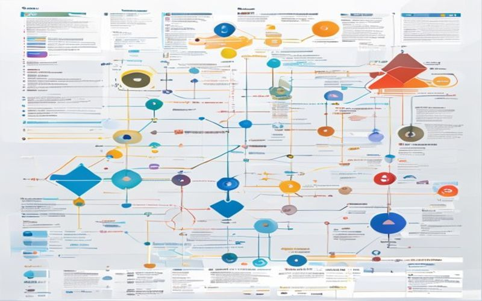

📑 目录
1. 云原生概述：重新定义现代应用交付
云原生是一套构建和运行应用程序的方法论，充分利用云计算的弹性、分布式和自动化优势。通过容器化、微服务、云原生存储和自动化运维等技术手段，企业能够实现应用的高可用、快速迭代和资源高效利用。CNCF云原生计算基金会定义的核心价值观强调可移植性、灵活性和声明式配置，已成为现代云时代软件工程的主流范式。
图1：云原生架构示意图
2. 容器化基础：Docker与容器运行时
容器技术是云原生的基石，Docker将应用及其依赖打包为标准化镜像，实现"一次构建，到处运行"。containerd作为Docker的核心容器运行时，提供轻量级、高性能的容器管理能力。Podman等替代方案实现无守护进程运行，提升安全性。镜像分层、联合文件系统（UnionFS）和写时复制（COW）机制确保容器启动迅速且资源占用极低，支撑大规模容器编排成为可能。

图2：Docker容器化架构
3. Kubernetes核心概念与架构
Kubernetes已成为容器编排的事实标准。Master节点掌控集群状态，Node节点承载工作负载，Pod作为最小调度单元封装一个或多个容器。Deployment声明式管理应用副本，Service提供稳定的网络入口，ConfigMap和Secret实现配置与敏感信息管理。HPA垂直/水平自动扩缩容应对流量波动，PV/PVC抽象存储资源。理解Kubernetes的控制平面、数据平面和etcd一致性存储，是掌握云原生编排的关键。
图3：Kubernetes集群架构
4. 云原生存储与数据管理
云原生环境中的有状态应用面临数据持久化挑战。CSI容器存储接口统一存储编排， StatefulSet管理有状态工作负载。Local PV适合高性能场景，远程存储如Ceph、MinIO提供弹性存储能力。数据备份、灾难恢复和多副本同步机制保障数据安全。OpenEBS、Longhorn等云原生存储方案通过微服务架构实现存储的弹性伸缩，告别传统存储阵列的单点故障瓶颈。
图4：云原生存储架构
5. 服务网格：连接、安全与可观测性
服务网格将网络通信、安全策略和可观测性从应用代码中剥离，交给基础设施层处理。Istio、Linkerd等主流方案通过Sidecar代理透明拦截所有进出流量，实现细粒度的流量管理、可观测性收集和mTLS双向加密。DestinationRule定义目标策略，VirtualService控制路由规则，无需修改应用代码即可实现金丝雀发布、蓝绿部署和流量镜像，大幅提升发布灵活性和安全性。
图5：服务网格架构
6. 无服务器架构Serverless实践
Serverless让开发者专注业务逻辑，无需管理服务器基础设施。AWS Lambda、阿里云函数计算等平台按需自动扩缩容，按执行时间计费。Knative在Kubernetes上实现Serverless能力，支持流量管理和自动伸缩。Cold Start延迟优化、函数编排和事件驱动架构是Serverless设计核心考量。配合云事件源（对象存储变更、消息队列、定时触发），构建高度弹性和成本优化的云原生应用。

图6：Serverless架构
7. 云原生网络安全与零信任
云原生环境网络边界模糊，零信任安全成为必然选择。NetworkPolicy细粒度控制Pod间通信，Cilium基于eBPF实现高性能网络策略。mTLS双向认证确保服务间通信安全，SPIFFE/SPIRE统一身份认证框架为服务颁发加密身份。RBAC基于角色的访问控制限制资源操作权限，安全扫描工具Trivy、Falco检测漏洞和运行时威胁，构建纵深防御体系，践行"永不信任，始终验证"的零信任原则。

图7：云原生网络安全
8. 持续交付与GitOps工作流
GitOps将Git仓库作为系统唯一真相来源，声明式配置驱动自动化部署。ArgoCD、Flux等工具监听Git变化，自动同步集群状态。Helm Charts和Kustomize实现Kubernetes资源配置模板化。CI/CD流水线（Jenkins X、Tekton、GitHub Actions）集成镜像构建、安全扫描和灰度发布。蓝绿部署、金丝雀发布通过流量管理实现平滑升级，回滚操作只需git revert即可完成，真正实现不可变基础设施理念。

图8：GitOps工作流
9. 可观测性与分布式追踪
云原生微服务调用链路复杂，可观测性由指标（Metrics）、日志（Logs）和追踪（Traces）三大支柱构成。Prometheus+Grafana监控指标并可视化展示，ELK/EFK日志聚合分析，Jaeger/Zipkin分布式追踪。OpenTelemetry统一采集标准，降低厂商锁定。SLO/SLI定义服务质量目标，SLA报警确保异常及时响应。Grafana Loki高效存储日志，成本可控。可观测性不仅是排障工具，更是业务洞察和容量规划的决策依据。

图9：可观测性体系
10. 多云与混合云原生策略
多云架构避免单云厂商锁定，提升容灾能力。Kubernetes统一抽象层使应用在不同云厂商间平滑迁移。Terraform、 Pulumi等基础设施即代码工具实现跨云资源编排。Crossplane在Kubernetes上管理任意云资源。混合云场景中，云边协同通过K3s、MicroK8s在边缘节点部署轻量集群。成本优化需要精细的资源调度、Spot实例利用和预留实例组合策略，实现性能与成本的平衡。

图10：多云架构策略